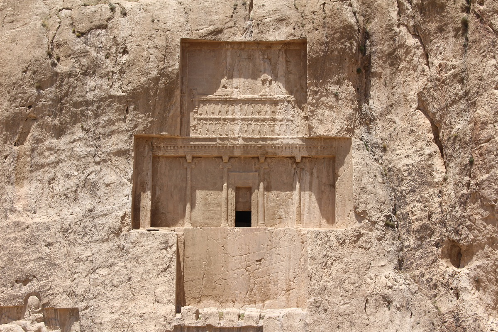
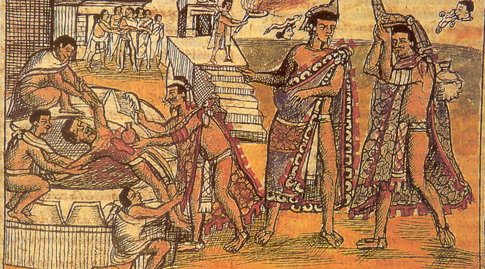
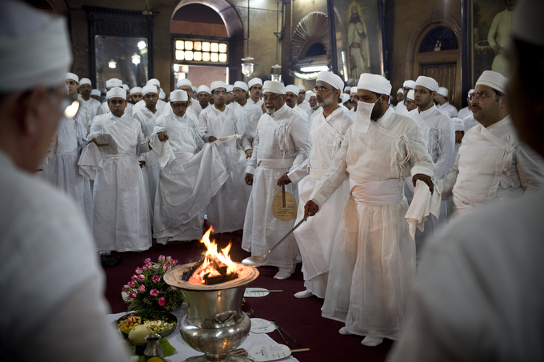
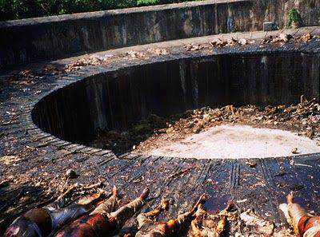
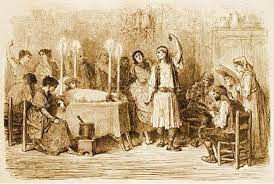

Os rituais funerários na antiga Mesopotâmia desempenharam um papel importante na cultura e religião desse povo, sua civilização prosperou entre aproximadamente 3500 a.C. e cerca de 539 a.C., na região que hoje fica entre o Iraque, partes do Irã, Síria e Turquia. Ao longo de sua história, a Mesopotâmia foi o lar de várias civilizações, incluindo sumérios, acádios, babilônios e assírios, cada uma delas contribuindo com suas próprias práticas e crenças relacionadas à morte e aos ritos funerários.
Os mesopotâmicos compartilhavam a crença na existência de uma vida após a morte, que era vista como uma continuação da vida na terra. No entanto, os detalhes dessa vida após a morte variavam entre as diferentes civilizações. Geralmente, os mortos eram sepultados, e os túmulos frequentemente eram construídos com tijolos de adobe. Os falecidos eram acompanhados por seus pertences pessoais, alimentos e bebidas, acreditando-se que esses itens seriam necessários na próxima jornada. Os rituais funerários eram diversificados, dependendo da civilização mesopotâmica, mas muitas vezes incluíam cerimônias religiosas destinadas a garantir uma passagem segura para a vida após a morte. Sacerdotes e sacerdotisas desempenhavam papéis essenciais nesses rituais. Durante essas cerimônias, hinos e preces eram entoados para invocar a proteção divina e buscar uma existência favorável no além. Os mesopotâmicos
acreditavam que os deuses desempenhavam um papel fundamental na vida após a morte, e, portanto, oferendas e sacrifícios eram feitos para apaziguá-los e garantir o bem-estar do falecido nessa nova fase. Os governantes e figuras proeminentes eram frequentemente sepultados em túmulos majestosos, que poderiam incluir complexos funerários impressionantes. Esses monumentos tinham a intenção de preservar a memória do falecido e servir como locais contínuos de adoração. Os mortos costumavam ser acompanhados de amuletos e talismãs destinados a protegê-los na vida após a morte. Acreditava-se que os falecidos necessitavam de cuidados contínuos, e os familiares frequentemente faziam oferendas e visitavam os túmulos regularmente para assegurar o conforto e bem-estar de seus entes queridos na próxima vida.


Os rituais de morte na antiga Pérsia, que creceu a partir do primeiro milênio a.C., envolviam diversas práticas e crenças que destacavam a importância da transição do falecido para a vida após a morte. Quando ocorria um óbito, os familiares em luto conduziam rituais que incluíam lamentos e cerimônias religiosas. Esses rituais eram concebidos como uma forma de prestar homenagem ao falecido e de solicitar proteção para a alma na jornada após a morte.
Uma prática distintiva entre os antigos persas envolvia a purificação dos corpos dos falecidos, muitas vezes realizada com água doce retirada dos rios, como parte do processo de preparação para o enterro. Eles preferiam as sepultura em vez da cremação, com túmulos variando em tamanho e elaboração conforme o status social e os recursos da família do falecido. No decorrer dos rituais funerários, oferendas de alimentos, bebidas e outros bens materiais eram comuns, acreditando-se que esses objetos seriam necessários na vida após a morte. Uma parte substancial da população persa seguia o zoroastrismo, uma das primeiras religiões monoteístas do mundo, fundada por Zaratustra (ou

Zoroastro). O zoroastrismo destacava a crença em um julgamento final, no qual as almas seriam avaliadas com base em suas ações na vida terrena. Para os adeptos do zoroastrismo, o método de sepultamento predominante era a utilização das "Torres do Silêncio," estruturas onde os corpos eram deixados ao ar livre, permitindo que aves de rapina, como abutres, consumissem a carne. Isso era realizado com o intuito de evitar a contaminação da terra e da água, consideradas sagradas. Os persas zoroastrianos acreditavam que, após a morte, as almas dos justos seguiriam em direção ao paraíso, enquanto as dos ímpios enfrentariam um destino desfavorável. O julgamento final ocupava um papel essencial nas crenças acerca da vida após a morte.
Os rituais de morte para os antigos hebreus, de acordo com as tradições e crenças judaicas, eram profundamente enraizados na religião e na cultura desse povo. Os antigos hebreus consideravam o sepultamento como um dever sagrado. A cremação era estritamente evitada, e os corpos eram sepultados em túmulos, geralmente em covas cavadas na terra. O sepultamento rápido era uma prática comum, pois a Lei Judaica exigia que os mortos fossem enterrados no mesmo dia de sua morte, sempre que possível. Quando alguém morria, os familiares e amigos realizavam rituais de luto que incluíam lamentos, choro e, em algumas situações, rasgar as roupas como sinal de dor. O luto podia durar sete

dias, conhecidos como "Shivah". Durante o período de luto, os familiares e amigos podiam oferecer orações e recitar salmos em homenagem ao falecido. Também era comum oferecer alimentos e bebidas aos enlutados. A cerimônia de enterro judaica, conhecida como "Kevurah," era conduzida por um grupo de pessoas chamado "Chevra Kadisha." Durante essa cerimônia, o corpo era lavado, vestido com um simples sudário branco e colocado em um caixão. Não havia a tradição de embalsamar o corpo, para manter a simplicidade e a decomposição natural do corpo. A memória dos falecidos era mantida com a observação anual do "Yahrzeit," que é a data de aniversário de sua morte.
Nesse dia, os parentes acendiam uma vela em homenagem ao falecido e frequentemente visitavam sua sepultura. Os antigos hebreus acreditavam em uma vida após a morte, e a conduta na vida terrena era considerada crucial para a vida eterna. A boa ação e a obediência aos mandamentos de Deus eram aspectos essenciais dessa crença. Os judeus eram ensinados a respeitar os mortos e as sepulturas, e a profanação de um túmulo era considerada uma ofensa grave. Essas práticas e crenças desempenharam um papel significativo na vida dos antigos hebreus e continuam a influenciar as tradições judaicas em relação à morte e ao luto até os dias de hoje.